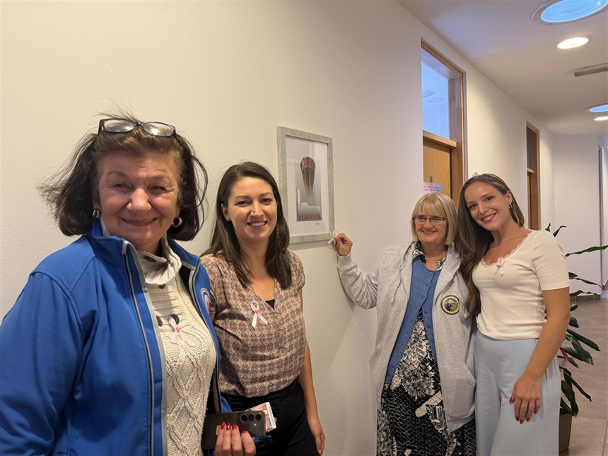

Field research in Vukovar as part of the PsySocFear-F project
24 September 2026
With the beginning of autumn, we are continuing our field activities as part of the project Psychosocial factors as predictors of fear of cancer recurrence in women diagnosed with breast and gynecological cancers (PsySocFear-F) , led by Associate Professor Lovorka Brajković, PhD.
The project focuses on gaining a better understanding of the factors that contribute to fear of cancer recurrence, with the aim, among other things, of contributing to the development of higher-quality psychological support and the preparation of educational materials and recommendations for professional practice.
The research is conducted using both qualitative and quantitative approaches, and this time our field research took us to Vukovar.
Our visit to Vukovar was organised by our valued external collaborator, Professor Marijana Braš, PhD, who has been working with oncology patients from this area for many years.
Associate Professor Ana Petak, PhD and Dora Korać, PhD, spent several productive days in the field, receiving an exceptionally warm welcome and valuable support from Dr Jadranka Ban and Ms Svjetlana Dželalija Kovačić, President of the Association of Croatian Homeland War Veterans.
With their help in organising the space and bringing participants together, two focus groups were conducted. The meetings took place in an open and stimulating atmosphere, and the participants showed great willingness to talk and share their own experiences.
It was particularly meaningful for us to hear that the meetings themselves provided participants with an opportunity to exchange advice and a sense that their opinions and perspectives were recognised and valued.
We believe that the collected data will make a valuable contribution to further research, as well as provide a basis for developing possible interventions and activities that could be implemented in practice in the future.
During our stay in Vukovar, we also presented the project, distributed promotional materials and further expanded the invitation to participate in the research.
We are particularly pleased that the Association has expressed its willingness to host us during the workshops that we plan to conduct in the new project year.
Dr Jadranka Ban and Ms Svjetlana Dželalija Kovačić also connected us with numerous new contacts, opening up opportunities for further cooperation and the implementation of project activities in the field.
We would like to thank them for their hospitality, support and trust, as well as all the participants who contributed to the research through their participation and openness.
We look forward to new meetings and hope to share new field reports with you soon!